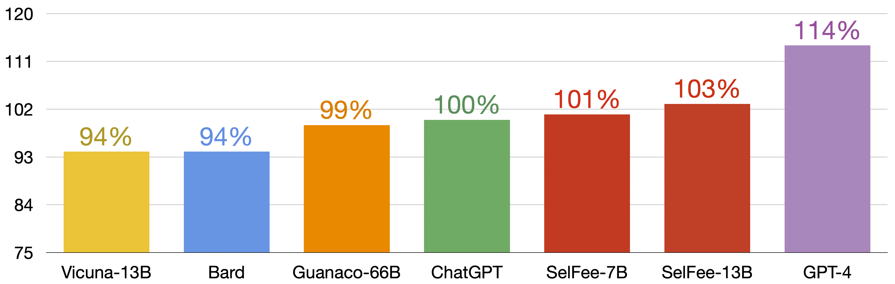
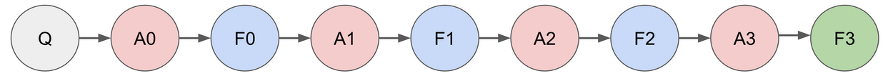
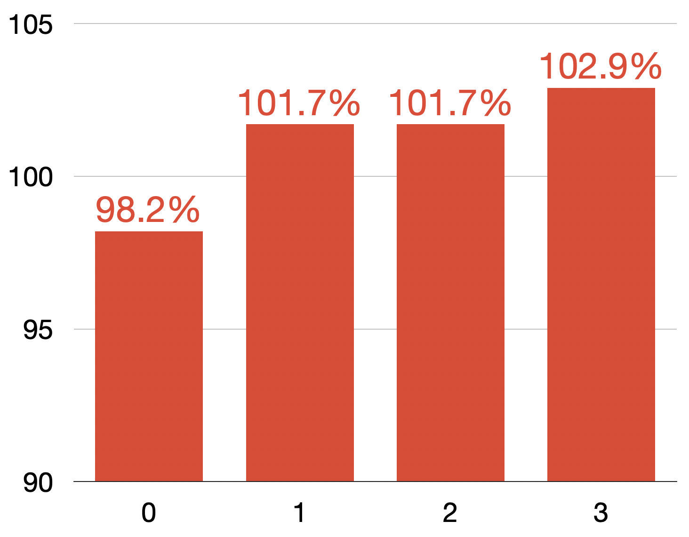
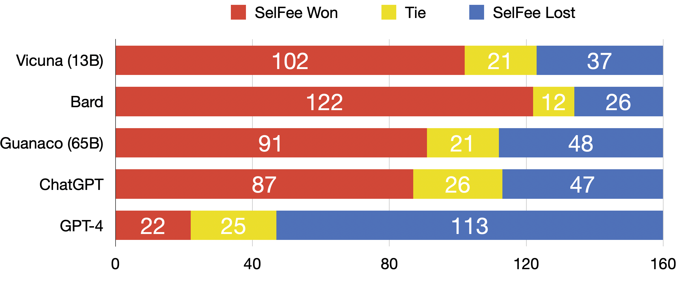

SelFee: Iterative Self-Revising LLM
Empowered by Self-Feedback Generation
Team SelFee, May 31, 2023
Seonghyeon Ye*,
Yongrae Jo*,
Doyoung Kim*,
Sungdong Kim,
Hyeonbin Hwang,
Minjoon Seo
SelFee (generated by stable diffusion)
News
Introducing SelFee
We are excited to announce the release of SelFee, our new instruction-following language model that generates self-feedback on its response and self-revises based on the feedback. We finetuned the LLaMA model (7B, 13B) using 178K training instances that contain self-feedback and revision data generated by ChatGPT.
On Vicuna evaluation setting, both of our SelFee models (7B, 13B) outperform LLaMA, Alpaca, Vicuna, Guanaco and are comparable to ChatGPT, making them some of the most powerful open-sourced models available today. SelFee is particularly effective in creative writing or long-form text generation, as it requires an iterative writing process to generate high-quality text for humans.
However, similar to other open-sourced models, our model also fails on math, reasoning, factuality, and coding tasks compared to closed-API models such as ChatGPT or Bard.
This suggests that better base LMs are needed for better factuality (The False Promise of Imitating Proprietary LLMs).
Also, we acknowledge the limitations in the comprehensiveness and consistency of the evaluation settings. We are planning to evaluate our model using a more comprehensive, consistent, and reliable evaluation setup. Please take these claims with a grain of salt.

Figure 1. Evaluation Result of SelFee on Vicuna Evaluation Setting
Overview of SelFee
Recent research has demonstrated that the performance of language models can be enhanced through natural language feedback (Reflexion, Self-Correct, RL4F). In particular, language models that generate their own feedback without relying on external models or tools have proven to be effective (PEER, Self-Refine, Self-Critique).
Motivated by the effectiveness of self-feedback generation, we release a model that is fine-tuned for self-feedback and self-revision generation. Unlike previous approaches, our model does not require a document retrieval process, few-shot demonstrations for in-context learning, a large LLM over 100B in size, or task-specific models.
SelFee is a LLaMA-based instruction-following model that has been fine-tuned to continuously revise its own answer until it provides a high-quality response in a single inference.
When presented with an instruction Q, our model generates not only the initial answer A0 but also self-feedback sequences F0. By analyzing the content of the generated feedback F0, the model determines whether a revision is necessary or not.
If a revision is deemed necessary, the model generates the revised answer A1 based on the feedback F0.
Additionally, it generates F1, which represents feedback for A1, and so forth. Importantly, this entire process is completed within a single inference. Even with this straightforward task, our model demonstrates a significant improvement over existing LLaMA-based models.

Figure 2. The generation process of SelFee, an example of 3 revisions.
1. We have collected instruction data from various sources (ShareGPT, Alpaca, Math, Code, and Flan Collection), resulting in a dataset of 178K training instances.
2. We have augmented the feedback and revision instances through distillation from a teacher LLM, ChatGPT. This distillation process helps address the scarcity of feedback and revision data at a more affordable cost.
3. By enforcing the model to undergo revisions, we observe improvements in the final answers. Increasing the minimum number of required revisions corresponds to a corresponding increase in performance. This implies that scaling the inference computation to generate longer sequence might be more effective than scaling the model size.
Data Collection and Augmentation
To train our model with various instructions and answer pairs, we utilized data augmentation using OpenAI API calls. The process involved three steps.
1. We collected a range of instructions from multiple sources and input them into ChatGPT to generate corresponding answers.
2. We obtained feedback on the generated answers by querying ChatGPT once again and asked it to assess whether any revision was necessary for the initial answer.
3. If a revision was deemed necessary, we had ChatGPT revise the answer based on the self-generated feedback.
We repeated this process until the model determined that no further revisions were required.
For data augmentation, we used datasets from five different sources. These are the Stanford Alpaca dataset, math collection, code collection, Flan collection, and ShareGPT. Force Math collection, Code collection, and Flan collection, since the annotated ground truth answer is available for each of these questions, we used ChatGPT to generate feedback on its own generation when conditioned on the ground truth answer.
We include the dataset used to train the Stanford Alpaca model. The dataset contains around 52k instructions, which is generated by OpenAI’s text-davinci-003 following the self-instruct process. We only used the instructions of the dataset and and obtained responses and feedback using ChatGPT.
The math collection consists of three different datasets: AQUA (10k), GSM8K (8.79k), and MATH (7.47k).
The code collection consists of three datasets: Conala (2.78k), Deepmind Code Contest (8.16k), Dr Repair (18k), and MBPP (969).
The FLAN collection includes subsets of FLAN collection datasets. We only utilized ten instances per task and excluded the subsets from Dr Repair and Deepmind Code Contest since they were already included in the code collection.
Initially, we collected 90k dialogues shared by users on ShareGPT through public APIs. To maintain data quality, we removed any non-English conversations and performed deduplication at the user-query level. This resulted in 54.6k training examples.
Training
We utilize FastChat to train the model. Given the instruction, we fine-tune the model to generate the answer and feedback chain (including the revisions).
| Model Name | Dataset | Training Code | Weights | Evaluation Metrics |
| LLaMA | Publicly available datasets (1T token) |
N/A | Available (7B, 13B, 30B, 65B) |
Academic benchmark |
| Alpaca | Self-instruct from davinci-003 API (52K samples) |
Available | Available (7B) |
Author evaluation |
| Vicuna | User-shared conversations (70K samples) |
Available | Available (7B, 13B) |
GPT-4 assessment |
| SelFee | Feedback & Revision augmentation from ChatGPT (178K samples) |
Available | Available (7B, 13B) |
GPT-4 assessment |
| Bard/ChatGPT | N/A | N/A | N/A | Mixed |
Table 2. Comparsion of training details with other notable models
Inference
During the inference process, we observed that the quality of an answer improved with a higher number of revisions. When we augmented the training data through ChatGPT, more revisions did not always guarantee a higher-quality answer. It was particularly evident that forcing a revision when ChatGPT deemed it unnecessary actually decreased the quality of the output.
In contrast, SelFee was trained to autonomously revise the output using feedback in an autoregressive manner. This led us to investigate whether enforcing our model to revise every question would enhance the quality of the output. The results of our investigation are as follows!

Figure 3. Evaluation results of SelFee (13B) on Vicuna evaluation setting depending on the minimum number of required revisions.
As shown in the above figure, enforcing a minimum of 3 revisions yields the best performance. Interestingly, a 7B SelFee model that generates at least 3 revisions outperforms a 13B SelFee model that is not required to generate revisions (101.4 vs. 98.2). This suggests that increasing the inference computation of a language model may be more effective than simply increasing the model size.
Evaluation
We primarily adopt the evaluation setting of Vicuna, which involves using 80 queries encompassing diverse topics. Instead of conducting an expensive human evaluation, we perform a pilot evaluation employing GPT-4 as the evaluator. We report the relative scores compared to our teacher model, ChatGPT.
Considering that GPT-4 is known to exhibit positional bias, we employ a bidirectional evaluation setting. This means that each evaluation instance is inferred twice, depending on its position.

Figure 4. Win Rate test with other models utilizing GPT-4 Assessment.
Limitations
While SelFee (7B, 13B) demonstrates comparable performance to ChatGPT in the Vicuna evaluation setting, we have identified that our model lacks knowledge in math, reasoning, factuality, and coding compared to ChatGPT. Since this is a common limitation of current open-source models (Vicuna, Alpaca, Guanaco, etc), further research on building better base models should be explored.
Also, we recognize that our current evaluation setting does not provide a complete picture, as it has limitations in terms of comprehension (limited to 80 queries), inconsistency, and unreliability. We are actively developing a more comprehensive and reliable evaluation setting, and we encourage you to stay tuned for further updates!
Online demo
Team members
Seonghyeon Ye*, Yongrae Jo*, Doyoung Kim*, Sungdong Kim, Hyeonbin Hwang, and Minjoon Seo.
(* denotes equal contribution)
Release
The data augmentation, training and evaluation code is available on our Github repository. Additionally, we have released the SelFee-7B and SelFee-13B model diff weights, which can be found with instructions here. Moreover, the training instances used to train SelFee is released on huggingface.
License
The research preview online demo is only for non-commercial use and is subject to various licenses and terms of use, including the LLaMA model License, OpenAI's Terms of Use for the generated data, and ShareGPT's Privacy Practices. If you suspect any violations, please reach out to us.
Citation
@misc{selfee2023,
author = {Ye, Seonghyeon and Jo, Yongrae and Kim, Doyoung and Kim, Sungdong and Hwang, Hyeonbin and Seo, Minjoon},
title = {SelFee: Iterative Self-Revising LLM Empowered by Self-Feedback Generation},
url = {https://kaistai.github.io/SelFee/},
month = {May},
year = {2023},
howpublished = {Blog post}
}